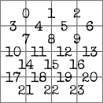

On the Subject of Algorithmia
There appears to have been an accident at the restaurant placemat factory.
- The screen at the top of the module cycles through 10 two-digit numbers. This sequence is the module’s seed, starting with the number in blue.
- The module will generate a 4×4 maze, where each cell is represented by a bulb in its corresponding position on the module.
- Two of the bulbs will be lit. The white bulb represents your current position, while the colored bulb represents the goal. Use the bars on the sides of the grid to navigate to the goal without passing through a wall in the maze.
Determining the Walls of the Maze
- The module generates its maze using a certain algorithm. The algorithm used is determined by the color of the non-white bulb.
- When generating the maze, the algorithm at many points requires the use of random numbers.
- Place a “pointer” on the first number of the seed.
- Any time the algorithm requests a random number, a number n will be supplied. Modulo the number the pointer is on by n to obtain the number used for the calculation.
- Then, move the pointer to the next number of the seed, which wraps around from the end to the beginning.
Important things you probably shouldn’t forget
- The edges of the 4×4 grid are not classified as “edges” in the following algorithms. You still cannot pass through them on the module.
- All counting is zero-indexed: The first entry of a sequence is index 0, the second is index 1, the third is index 2, etc.
- Unless stated otherwise, all edges begin in an impassable state.
Red Bulb: Kruskal’s Algorithm:
- Begin with 16 independent “groups” representing each cell in the maze.
- Let L be the list of all edges on the module in the order depicted to the right.
- Generate a random number with n= the number of edges in L. Count this many entries into L.
- Remove the edge at this position from the list, make this edge passable, and unify the two groups connected by this edge into one group.
- Remove any edges from L which connect a group to itself.
- Repeat steps 3–5 until there is only one group on the module.